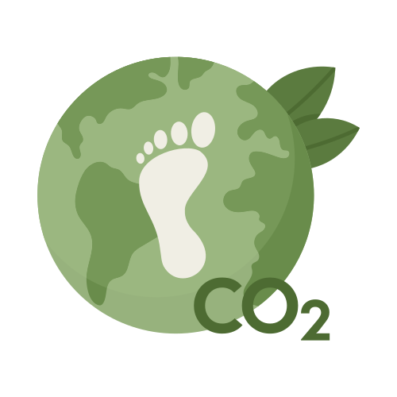

Welcome to our Learn page!
Here, you'll find valuable information about carbon offsetting and its importance in
combating climate change.
Understanding carbon offsetting is crucial for making informed decisions about
reducing your carbon footprint and contributing to a more sustainable future.

What is Carbon Offsetting?
- Explanation of carbon offsetting:
Define carbon offsetting as the process of compensating for carbon dioxide emissions by investing in
projects that reduce or remove greenhouse gases from the atmosphere.
- Importance of carbon offsetting:
Highlight the role of carbon offsetting in mitigating climate change and achieving carbon neutrality.
How Does Carbon Offsetting Work?
- Carbon offset projects:
Describe various types of carbon offset projects, such as reforestation,
renewable energy, and methane capture.
- Calculation process:
Explain the methodology behind calculating carbon emissions
and determining the amount of offsets needed to neutralize them.
Benefits of Carbon Offsetting
- Environmental benefits: Discuss how carbon offsetting helps preserve ecosystems,
reduce air pollution, and conserve natural resources
- Social and economic benefits: Explore the positive impacts of carbon offset projects on local communities,
including job creation and improved livelihoods
Choosing Carbon Offset Projects
- Criteria for selection: Provide guidance on evaluating carbon
offset projects based on credibility, additionality, and co-benefits.
- Certifications and standards: Introduce reputable certification programs
like Gold Standard and Verified Carbon Standard
Getting Started with Carbon Offsetting
- Personal and corporate options: Outline how individuals and businesses
can participate in carbon offsetting through online calculators, purchasing carbon credits,
or investing in sustainability initiatives.
- Tips for effective offsetting: Offer practical advice on maximizing the effectiveness of carbon offsetting efforts and integrating them into broader sustainability strategies
What is Carbon Offsetting?
- Explanation of carbon offsetting: Define carbon offsetting as the process of compensating for carbon dioxide emissions by investing in projects that reduce or remove greenhouse gases from the atmosphere.
- Importance of carbon offsetting: Highlight the role of carbon offsetting in mitigating climate change and achieving carbon neutrality.
How Does Carbon Offsetting Work?
- Carbon offset projects: Describe various types of carbon offset projects, such as reforestation, renewable energy, and methane capture.
- Calculation process: Explain the methodology behind calculating carbon emissions and determining the amount of offsets needed to neutralize them.
Benefits of Carbon Offsetting
- Environmental benefits: Discuss how carbon offsetting helps preserve ecosystems, reduce air pollution, and conserve natural resources
- Social and economic benefits: Explore the positive impacts of carbon offset projects on local communities, including job creation and improved livelihoods
Choosing Carbon Offset Projects
- Criteria for selection: Provide guidance on evaluating carbon offset projects based on credibility, additionality, and co-benefits.
- Certifications and standards: Introduce reputable certification programs like Gold Standard and Verified Carbon Standard
Getting Started with Carbon Offsetting
- Personal and corporate options: Outline how individuals and businesses can participate in carbon offsetting through online calculators, purchasing carbon credits, or investing in sustainability initiatives.
- Tips for effective offsetting: Offer practical advice on maximizing the effectiveness of carbon offsetting efforts and integrating them into broader sustainability strategies